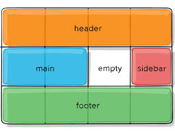

¿Qué es CSS Grid Layout?
CSS Grid layout contiene funciones de diseño dirigidas a los desarrolladores de aplicaciones web. El CSS grid se puede utilizar para lograr muchos diseños diferentes. También se destaca por permitir dividir una página en áreas o regiones principales, por definir la relación en términos de tamaño, posición y capas entre partes de un control construido a partir de primitivas HTML.
Está marcando tendencia 😎.
Esto puede parecer baladí, frívolo o simplemente una tontería, pero en mundo de desarrollo de software el concepto de tendencia es fundamental. La evolución entre paradigmas de programación obedece a mejoras técnicas incrementales, a la discusión entre corrientes de pensamiento y también a cambios de moda.
CSS Grid Layout en CSS es un sistema de diseño de dos dimensiones que te permite organizar el contenido en filas y columnas. Es especialmente útil para crear layouts complejos de manera eficiente y flexible. Pero es mucho más complejo que Flex Box y con muchas más funcionalidades. Aquí veremos la configuración básica.
Al igual que las tablas, el grid layout permite a un autor alinear elementos en columnas y filas. Sin embargo, con CSS grid son posibles muchos más diseños y de forma más sencilla que con las tablas. Por ejemplo, los elementos secundarios de un contenedor de cuadrícula podrían posicionarse para que se solapen y se superpongan, de forma similar a los elementos posicionados en CSS.
Configuración básica
CSS Grid Layout funciona bajo el principio de contenedor padre, que va a tener una configuración específica de filas y columnas, y sus elementos elementos hijos, que podrán recibir configuraciones adiciones. En este sentido sigue el funcionamiento de Flex box layout
Contenedor padre
El contenedor padre va a recibir la propiedad de CSS
display:grid y, partir de este momento, podremos diseñar
una parrilla o retícula donde se disponen los elementos
hijos.
Después de haber establecido la regla display:grid, este contenedor recibe las siguientes propiedades:
-
grid-template-columns: Establece la configuración de las columnas. -
grid-template-rows: Establece la configurción de las filas. -
gap: Establece el margen entre los elementos hijos.
A partir de esta configuración básica se crea una rejilla como esta:

A partir de esta imagen, podemos ver los siguientes elementos:
-
Contenedor de Grid (grid container): El elemento
padre donde se aplica
display: grid;. - Celdas de Grid (grid cell): Los elementos hijos dentro del contenedor de grid.
- Líneas de Grid (grid lines): Líneas horizontales y verticales que dividen el contenedor en celdas.
- Áreas de Grid (grid areas): Secciones rectangulares definidas por múltiples celdas.
-
Tracks: Filas (
grid rows) y columnas (grid columns) que forman la estructura del grid. - Gaps: Espaciado entre filas y columnas.
Ojo! Hasta aquí se ha definido grid pero no hay elementos hijo.
Ejemplo de configuración básica de Grid
Este es un ejemplo de una configuración de Grid de 2x2:
.ex1 {
<!-- otras propiedades -->
display: grid;
grid-template-columns: 50% 50%;
grid-template-rows: 50% 50%;
} Hay que activar las herramientas de desarrollo para ver la estructura de layout. Como se puede ver, la estructura en el contenedor padre existe al margen de los elementos hijos. Aúnque no tenga descendientes, la configuración sigue siendo válida.
Configuración de filas y columnas
En CSS, la propiedad grid-template-columns se utiliza
para definir el número y el tamaño de las columnas en un Grid Layout.
Mientras que la propiedad grid-template-rows establece en
número y tamaño de las filas.
Número de filas y columnas
El número de filas o columnas viene dado por el número de veces para cada item . Para n valores explícitos, se crearán n itens. Por ejemplo:
grid-template-columns: 50% %50; /* crea 2 columnas */
grid-template-columns: 50% %50 %50; /* crea 3 columnas */
grid-template-rows: 100%; /* crea 1 fila */
grid-template-rows: 50% %50 %50; /* crea 4 filas */
Valores que puede recibir grid-template-columns y
grid-template-rows
Unidades de medida explícitas
-
Pixeles (px): Ejemplo:
grid-template-columns: 100px 200px;(dos columnas de 100px y 200px). -
Porcentajes (%): Ejemplo:
grid-template-columns: 50% 50%;(dos columnas que ocupan la mitad del contenedor cada una). -
Unidades relativas: como
em,rem,vw,vh, etc. Ejemplo:grid-template-columns: 10em 20em;.
Fracciones (fr)
La unidad fr, que significa "fracción", es una unidad
específica del modelo de Grid Layout que se utiliza para asignar
proporciones del espacio disponible. Por ejemplo:
grid-template-columns: 1fr 2fr; /* crea 3 columas, pero la primera ocupa la mitad que la segunda */
grid-template-row: 1fr 2fr; /* crea 2 filas iguales */Esto crea dos columnas donde la segunda es el doble de ancha que la primera.
Palabras clave
-
auto: El tamaño de la columna se ajusta automáticamente al contenido. -
min-content: La columna será tan ancha como el contenido más pequeño permitido. -
max-content: La columna será tan ancha como el contenido más grande sin que se rompa.
Funciones avanzadas
-
repeat(): Simplifica la creación de patrones repetitivos y ahora mucho trabajo.Es la que más se usa. Por ejemplo:grid-template-columns: repeat(3, 1fr);(tres columnas iguales). -
minmax(min, max): Define un rango de tamaño mínimo y máximo. Ejemplo:grid-template-columns: minmax(100px, 1fr);. -
fit-content(size): Similar amax-content, pero limita el tamaño al valor especificado. Ejemplo:grid-template-columns: fit-content(200px);.
Valores combinados
Puedes mezclar diferentes valores para personalizar aún más el diseño. Ejemplo:
/* crea 5 columnas, de diferentes tamaños
y tres filas iguales */
grid-template-columns: 100px repeat(2, 1fr) 2fr auto;
grid-template-row: repeat(3, 1fr) 50px;Esto crea tres columnas: la primera fija en 100px, la segunda proporcional al espacio restante, y la tercera ajustada al contenido.
Nombres de líneas (avanzado)
Se pueden asignar nombres a las líneas del grid usando corchetes
[]. Ejemplo:
grid-template-columns: "header" "header" "header";Ejemplo de definición de varias columnas
.ex2 {
/* otras propiedades */
grid-template-columns: 50% repeat(3, 1fr) 5vw;
grid-template-rows: repeat(3, 3fr) 50%;
}Atajo de definición de Grid Layout grid-template
La propiedad grid-template es una propiedad abreviada en CSS que permite definir de manera conjunta las dimensiones de las filas y columnas en un diseño de cuadrícula (grid) y, opcionalmente, las áreas de la cuadrícula.
La sintaxis de esta propiedad espera recibir la definición de filas y columnas separadas por /. Por ejemplo:
.ex3 {
/* otras propiedades */
display: grid;
grid-template: repeat(3, 1fr) / repeat(2, 3fr);
gap: 1vw;
div {
/* otras propiedades */
}
}Configurando elemento hijos
Dentro de un contenedor con display: grid, los elementos hijos pueden ser configurados de diversas maneras para posicionarlos y controlar su tamaño dentro de la cuadrícula. Existen varias propiedades de CSS que puedes utilizar en un elemento hijo para manipular cómo se ubica y distribuye dentro de un contenedor grid. Las principales propiedades son:
Configuración de ancho y alto
Con las propiedades grid-column y
grid-row se puede controlar la ubicación y el tamaño de
un elemento dentro de la cuadrícula, tanto a lo largo de las columnas
como de las filas. Hay dos formas de establecer esta propiedad.
- Con la palabra reservar span: indica el número de celdas que va a ocupar.
- Con un rango: se especifica un rango entre las línas separadas por /.
/* Este código es equivalente en este ejemplo */
.ex4 {
.ancho {
grid-column: span 2;
}
.alto {
grid-row: span 2;
}
}
.ex4 {
.ancho {
grid-column: span 1/3;
}
.alto {
grid-row: span 2/4;
}
}
Grid Areas
Las áreas de cuadrícula son una forma de asignar y organizar visualmente regiones específicas dentro de un diseño de cuadrícula utilizando la propiedad grid-template-areas. Estas áreas permiten nombrar secciones de la cuadrícula para que los elementos hijos puedan colocarse fácilmente en ubicaciones específicas. Después, podemos hacer que un hijo ocupe el área definida.
Como ejemplo, tomemos el padrón de web semántica definido como esta image
El código para replicar este ejemplo es el siguiente
body {
padding: 20px;
min-height: 100vh;
background-color: #333;
box-sizing: border-box;
display: grid;
grid-template-columns: repeat(4, 1fr);
grid-template-rows: 200px 1fr 150px;
grid-template-areas:
"header header header header"
"main main . sidebar"
"footer footer footer footer";
/* sintaxis con atajo
grid-template:
"header header header header" 200px
"main main . sidebar" 1fr
"footer footer footer footer" 150px / 1fr 1fr 1fr 1fr; */
}
header,
main,
aside,
footer {
font-size: 1.5rem;
display: flex;
justify-content: center;
align-items: center;
}
header {
background-color: #f89425;
grid-area: header;
}
main {
background-color: #3ebde8;
grid-area: main;
}
aside {
background-color: #ea7170;
grid-area: sidebar;
}
footer {
background-color: #74c475;
grid-area: footer;
}Grid Layout y diseño responsive
Podemos aplicar Grid Layout para establer un diseño responsive a una aplicación web. La aproximación inicial podria ser establecer varias columnas dependiendo del ancho del viewport con media queries. Pero esto no es necesario porque tenemos alternativas.
Dentro de una función repeat podemos establecer que se repita tantas veces como para rellenar el espación disponible y establecer un ancho mínimo o máximo para cada columna.
Para lo primero tenemos las siguientes opciones:
-
auto-fill: calcula el número de columas dividiendo el espacio disponible entre el mínimo de cada columna; si hay espacio disponible expande las columnas. Rellena en contenedor padre con los hijos. -
auto-fit: calcula el número de columas dividiendo el espacio disponible entre el mínimo de cada columna; si hay espacio disponible expande las columnas. A direrencia del anterior, ocupa todo el espacio del contenedor padre cuando hay pocos elementos hijos.
Un ejemplo de código seria este
.contenedor {
display: grid;
grid-template-columns: repeat(auto-fill, minmax(350px, 1fr));
}Con cuatro líneas de código, se puede solucionar la mayoria de casos de dispositivos. Para grandes tamaños, se combinaria con una media query.